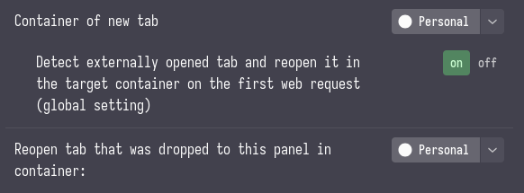
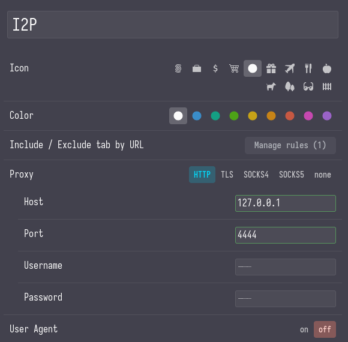
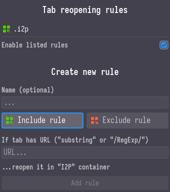

## Theming
- Settings -> Appearance -> Allow userChrome.css customization
- cd ~/.config/librewolf/librewolf/
/chrome - touch userChrome.css userContent.css (use browsertoolbox firefox feature to get the ids)
- For colors we can use https://color.firefox.com/ or we can use userChrome.css
- pywalfox extension and fetch colors
userChrome.css
#TabsToolbar { display: none !important; }
#sidebar-panel-header { display: none !important; }
#sidebar-box { padding-inline-start: 0px !important; }
* { border-radius: 0px !important; }
userContent.css
@-moz-document url-prefix("about:") {
/*body {
background-color: #0f0f0f !important;
color: #f4decd !important;
}*/
* {
border-radius: 0px !important;
}
}
## Ublock origin settings
- Disable javascript
- Disable loading remote fonts
## Sideberry extension
- Important - Builtin sidebar disabled from librewolf settings.
- Sideberry settings -> Navigation bar -> Enabled elements -> Add "Tabs Panel" (acts as workspaces) and assign different containers to each workspace.
- Different containers allows for isolation of browser cookies and other browser data.
-
Some workspace settings

- Custom rules can also be added for each container.
- Under help section we can export our settings using "Export addon data".
### Rules and settings for i2p container
-
Proxy settings

-
Custom rule so all url that include .i2p opens in i2ps' container from any workspace.

### Custom css for sideberry
- Sideberry settings -> Styles editor
-
Set the following values
- Border radius = 0px
- Margin = 4px
Note - For more senisitive stuff making seperate profiles or having a different browser alltogehter is also an option.
## Stylus extension - A css injection tool
* {
border-radius: 0px !important;
font-family: "Iosevka" !important;
}
## Other extensions
- Dark reader for dark mode
- Volume control - https://addons.mozilla.org/en-US/firefox/addon/volume-control-boost-volume/
## Other things
- Browser profiles :O